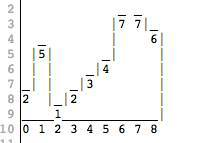
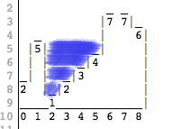

[We found this puzzle here: Twitter Puddle on programmingpraxis]
Consider the following picture:
In this picture we have walls of different heights. This picture is represented by an array of integers, where the value at each index is the height of the wall. The picture above is represented with an array as [2,5,1,2,3,4,7,7,6].
Now imagine it rains. How much water is going to be accumulated in puddles between walls?
We count volume in square blocks of 1×1. So in the picture above, everything to the left of index 1 spills out. Water to the right of index 7 also spills out. We are left with a puddle between 1 and 6 and the volume is 10.
Your task is to write a program to compute the volume of water in the puddle; you should strive for an algorithm that completes the task in a single pass.
If you have a solution you'd like to share see the Solutions page for instructions.